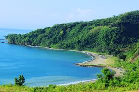
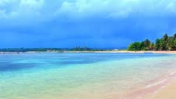

Artikel Menarik
Pantai Pelabuhan Ratu

Pantai Pelabuhan Ratu adalah pantai yang berlokasi di Pelabuhan Ratu, Jawa Barat, Indonesia .
Pantai ini cukup terkenal dari dahulu hingga saat ini. Karena tempatnya yang Indah dengan
lingkungan yang masih sejuk. Bila ingin membeli ikan disini tersedia pasar ikan yang
menawarkan harga yang terbilang cukup. Bila kalian ingin pergi kesini bila dari Jakarta
kemungkinan menempuh perjalanan hingga 5-7 jam. Namun sekarang sudah ada jalan Tol baru
yaitu Tol Bocimi walau sampai saat ini baru selesai sampai jalur Cigombong. Kalau kalian
ingin pergi kesini banyak tempat penginapan / villa yang menawarkan harga murah. Oiyaaa,,
Pantai disini ombaknya sangat besar, jadi disarankan untuk tidak berenang ke tempat yang rawan,
karena di khawatirkan bisa terjadi hal hal yang tidak diinginkan. Untuk harga tiket masuk
tidak sampai mengocek uang lebih pokoknya hehe :D . Untuk tempat rekreasinya disini masih banyak dan tidak jauh
dari lokasi ini, seperti Pantai Citepus, Pantai Karang Hawu dan Masih banyak lagi.
Pantai Ujung Genteng

Siapa sih yang belum tahu Pantai yang satu ini? yap ini adalah Pantai Ujung Genteng
Pantai Ujung Genteng yang berlokasi agak lumayan jauh dari Pantai Pelabuhan Ratu ini
mempunyai destinasi yang luar biasa. Pasirnya yang berwarna putih, ombaknya yang berwarna biru
dan ditambah lagi dengan angin yang sepoy sepoy. Namun untuk pergi kesini agak lumayan Jauh.
Namun hal itu tidak menyurutkan semangat untuk pergi kesana karena pada saat sampai tujuan
dapat memanjakan mata kita. Dengan gunung yang berwarna hijau serta seperti hutan akses masuk kedalamnya
. Di tambah ada muara (Sungai Besar) yang menuju laut. Dan disini terdapat Penyu juga. Hal
ini yang menjadi daya tarik wisatawan tidak hanya masyarakat lokal, namun ada juga masyarakat luar.
Disini juga terdapat Air Terjun (Curug), yang menambahkan pesona indahnya di lokasi ini.
Yakni Curug cikaso, dan masih banyak lagi. Disarankan datang pagi kesini untuk bisa menikmati
semua tempat wisata yang ada disini berkenaan dengan aksesnya yang agak jauh.
Pantai Geopark Ciletuh

Pantai Geopark Ciletuh yang jaraknya tidak terlalu jauh antara Pantai Ujung Genteng dengan
Pantai Pelabuhan Ratu ini memiliki daya tarik wisatawan yang khas. Bagaimana tidak? Disamping Pantai kita bisa
melihat air terjun dari pasir pantai. Tidak hanya Pantai saja yang berada di sini. Namun Puncak Darma juga ada
. Dari Pantai Geopark sekitar 10-15 km untuk pergi kepuncaknya. Kita juga bisa melihat pantai dari atas gunung.
Namun harus berhati-hati karena dibawahnya ada jurang. Kembali ke Pantai, tempat wisata ini memiliki air yang coklat,
namun bukan dari sampah atau yg lainnya. Disini memang sudah dinamakan Geopark Ciletuh dengan pantai yg coklat namun bersih.
Sebelum kita berangkat kesini kita dimanjakan dengan pemandangan yang luar biasa. Sebab, jalanannya
yang berliku liku ditambah jurang yang dibawahnya ada laut.. uuu sungguh mengerikan, untuk teman-teman
yang ingin kesini harap hati-hati yaaa.
Berikan Komentar Anda